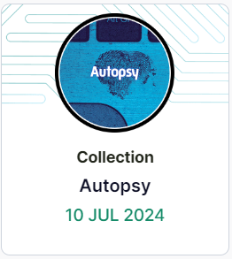
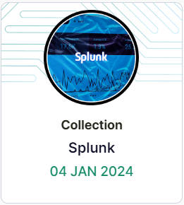
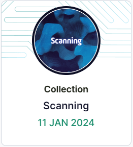

| Name |
Badge |
Description |
| Cyber Fundamentals |
|
This role is for anyone who is new to cybersecurity or has recently started their cybersecurity career. It will ensure you have the basics you need to succeed. |
| Threat Hunter - Beginner |
|
This role is for those new to cyber threat intelligence (CTI) and novice threat hunters. It also supports anyone looking to gain knowledge and develop skills in CTI, threat research, breaches, and threat actors. |
| Security Hygeine |
|
This introductory pathway is designed for a general audience and covers the key elements of protecting yourself online, both at work and at home. Everyone has a role to play in keeping themselves and their organization secure. Are you ready to be a security hero? |
| Management, Risk, and Compliance |
|
This role is for anyone who deals with risk and compliance in cybersecurity. |
| Technical Fundamentals |
 |
This role is for anyone who is new to cybersecurity or has recently started their cybersecurity career. It will ensure you have the technical essentials required to succeed. |
| Introduction to Digital Forensics |
 |
This pathway introduces topics that junior digital forensics analysts and incident responders will encounter, from the digital process and ethics to security and incident response fundamentals. Topics include many of those in FOR308. |
| Social Engineering |
|
This collection explores the topic of social engineering. It covers what social engineering is, the tactics and techniques commonly used to persuade us to click on malicious links or part with information, and how you can protect yourself from falling victim to social engineering. |
| Ethics & Laws |
|
This skillset covers some of the legal and ethical challenges you may come across in cybersecurity. Make sure you’re staying on the right side of the law by learning about bug bounty programs and the limits of ethical hacking. |
| Wireshark |
 |
Want to examine exactly what’s happening in your network? Wireshark is the tool for the job! This series will guide you through the basics of Wireshark and how to take full advantage of its functionalities and features, so you can learn more about the data traveling through your network. |
| MITRE ATT&CK |
 |
The MITRE ATT&CK framework is a matrix of tactics and techniques used by attackers. It provides a key source of information for building threat models and defensive methodologies to better classify attacks and assess risk. |
| Ransomware |
 |
Ransomware has come a long way since the 1980s. It's now one of the biggest threats to companies and has been the end goal of countless breaches in recent years. In this series you will learn about the different strains of ransomware and how they operate. |
| Nmap |
 |
Nmap is one of the most popular network scanner tools available. In this introductory series, you will learn what Nmap is and how to use it to enumerate for hosts, ports, and services on a target. You’ll also explore Nmap features such as NSE and various outputting formats, as well as how to optimize your scans to maximise your results and identify potentially vulnerable targets. |
| Nessus |
 |
Nessus is a vulnerability assessment scanner developed by Tenable Network Security to identify vulnerabilities in systems and applications. In this series, you'll explore Nessus, and learn how to scan different types of host using Nessus. You'll also learn about the different types of scans available with Nessus, as well as how to analyze the results from the tool. |
| Autopsy |
 |
Autopsy is an open-source digital forensics tool used by law enforcement, the military, and within the private sector worldwide. Get to grips with the ins and outs of Autopsy in this skill series and learn how to investigate cybercrime. |
| Splunk |
 |
Splunk is a software platform used to analyze, search, investigate and visualize machine-generated data collected from websites, applications, devices and more. In this series, we will explore the tool and its features, alongside how to use it for data analysis. |
| Elastic Playground |
 |
This unique collection offers you the opportunity to interact with a fully functional Elastic instance, loaded with a diverse range of data types. You'll get to experiment, manipulate, and analyze different data sets, providing a comprehensive understanding of Elastic's capabilities. Whether you're a beginner or an experienced user, this collection will enhance your skills and deepen your understanding of Elastic's versatility in handling various data types. Dive in and start your journey of discovery with Elastic. |
| Elastic Stack |
|
The Elastic Stack is a three-layered stack of open-source tools that, when fully assembled, allows users to analyze data from any type of source and in any format. This skill series will guide you through the Elastic Stack's simple yet sophisticated beats and dashboards for professional and efficient log analysis. |
| Elastic Data Ingest |
|
In this collection, you will learn about Elastic Beat integrations and how they enable real-time data collection, processing, and analysis. You will gain hands-on experience with logs and test your analysis skills using Kibana and several default dashboards. |
| OWASP Top 10 |
 |
This series gives an overview of the OWASP Top 10. This includes an introduction to the list as well as a high-level coverage of the current list. |
| Packet Analysis |
 |
Reading packets and understanding the structure of packet captures are essential skills in cybersecurity. This series will introduce the main packet analysis tools and how to look for flags inside packet headers. |
| Introducing the Cyber Kill Chain |
 |
The cyber kill chain is a cybersecurity model developed in 2011 by Lockheed Martin. It's a phase-based model that's often used to understand and dissect an adversarial attack structure. In this series, we'll explore each phase of the cyber kill chain and its significance. |
| The Cyber Kill Chain |
|
This series will walk you through each of the seven steps of the Cyber Kill Chain, exploring a specific attack scenario. You’ll learn the tools and techniques used by defenders to analyze an attack. |
| Introduction to Velociraptor |
|
Velociraptor is a powerful digital forensic tool that enables investigators to quickly triage and analyze live systems. It is designed to be run on a live system, rather than a forensic image, and allows for the collection of volatile data, the identification of suspicious processes, the creation of memory dumps, and more. This makes it particularly useful for incident response, where time is of the essence and quick identification of malicious activity is critical. |
| SUNBURST Supply Chain Compromise |
|
In December 2020, FireEye identified that the SolarWinds Orion software package had been compromised by a nation-state. This was subsequently installed onto the devices of several thousand organizations, leading to potential compromise. This series takes a closer look at the malware implants, the APT operators and some of their TTPS. |
| Active Directory Basics |
|
Active Directory (AD) is a Microsoft technology designed for network management. This introductory collection will guide you through what AD is, how it’s structured, and its functionalities. You'll learn how to navigate the Active Directory Users and Groups console, effectively manage users, groups, and organizational units within a domain, and how to add a workstation to a domain. You will also explore key AD topics such as the distinction between NTLM and Kerberos, group policy management, the mechanism of AD replication, and the intricacies of managing domain-joined machines. This collection is your gateway to mastering the essentials of Active Directory. |
| CTI First Principles |
|
Cyber Threat Intelligence is a discipline that is growing in both scale and relevance to cybersecurity. It involves proactively identifying and reporting on threats to an organization. In this collection, you can expect to learn about the fundamentals of intelligence, threat actors, and creating and testing hypotheses. |
| Introduction to Cryptography |
 |
This series is aimed at all skill levels, in it you'll learn about the foundation concepts behind cryptography. |
| NIST – Guidelines on Security and Privacy in Public Cloud Computing (800-144) |
|
Guidance time! This series covers the US’s National Institute of Standards and Technology Guidelines on Security and Privacy in Public Cloud Computing. |
| NIST – Security and Privacy Controls for Information Systems and Organizations (800-53) |
 |
NIST Special Publication 800-53 outlines protective measures for the security and privacy of organizations, systems, and individuals. |
| Introduction to Penetration Testing |
|
This series will look at penetration testing concepts and give the introductory notions needed to start exploring the field. These labs are theoretical and do not require any practical skills. |
| Introduction to Windows Exploitation |
 |
Windows exploitation is an advanced practice that takes time and commitment to learn properly. In this series, we will explore the condition of the Windows exploitation market, the most common types of Windows vulnerabilities, alongside their function and impact, useful terminology surrounding the topic, and our recommended pre-requisite knowledge before starting the practical series of full Windows exploitation. |
| Linux Command Line |
 |
Learn how to use the Linux Command Line Interface (CLI) and how it can be used to perform different tasks. The labs in this skills series range from navigating around a file structure to combining multiple commands to achieve a specific goal. |
| Scanning |
 |
Scanning is a crucial element of a penetration test as the information gained from a scan directly affects the way a tester approaches the rest of their attack. Learn all about pen test scanning in this skill series. |